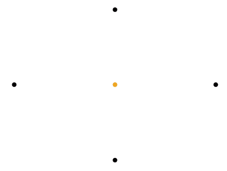

/
Hi, I'm Jay.
I'm an MPhys astrophysics student with far too many interests.

Check out my [ orbital simulator ] page to find out how I made this animation!
Check out my [ orbital simulator ] page to find out how I made this animation!